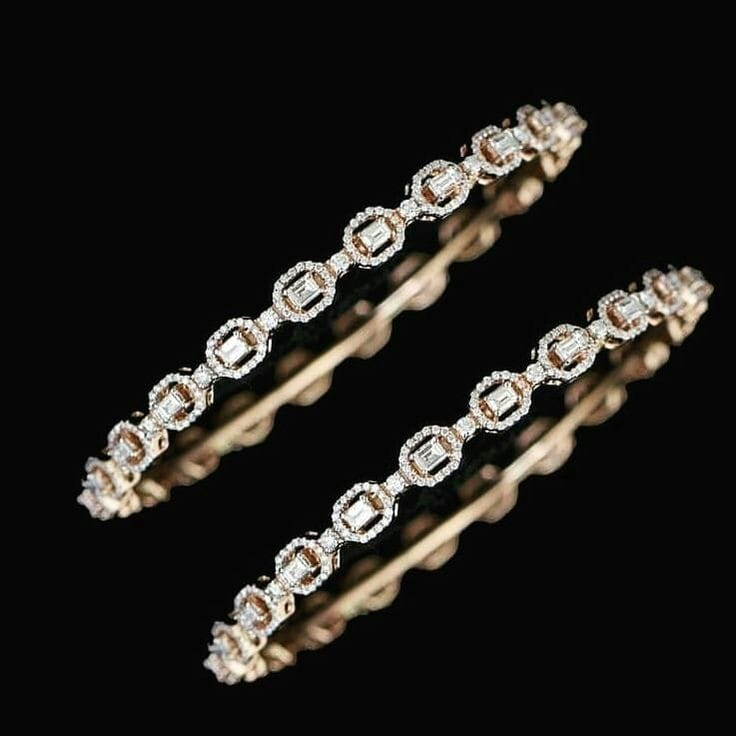
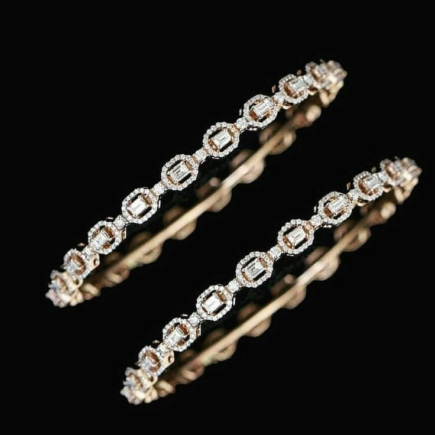

Women from different parts of the world favor bangles as a popular accessory. These decorative items are in different color combinations, styles, and materials. They are frequently embellished with intricate patterns or quotes that hold significance.
Bangles, used as jewelry for many years across various cultures, are viewed as customary adornment in numerous regions globally. They come in both intricate and plain designs and can be donned for regular wear or significant events.
Bangles: small circles that carry big traditions, connecting the past with the present in a delicate dance.